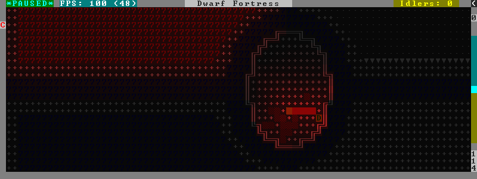

rendermax¶
This plugin provides a collection of OpenGL lighting filters that affect how the map is drawn to the screen.
Usage¶
rendermax lightLight the map tiles realistically. Outside tiles are light during the day and dark at night. Inside tiles are always dark unless a nearby unit is lighting it up, as if they were carrying torches.
rendermax light sun <hour>|cycleSet the outside lighting to correspond with the specified day hour (1-24), or specify
cycleto have the lighting follow the sun (which is the default).rendermax light reloadReload the lighting settings file.
rendermax trippyRandomize the color of each tile. Used for fun, or testing.
rendermax disableDisable any
rendermaxlighting filters that are currently active.
An image showing lava and dragon breath. Not pictured here: sunlight, shining items/plants, materials that color the light etc.

For better visibility, try changing the black color in palette to non totally black. See Bay12 forums thread 128487 for more info.